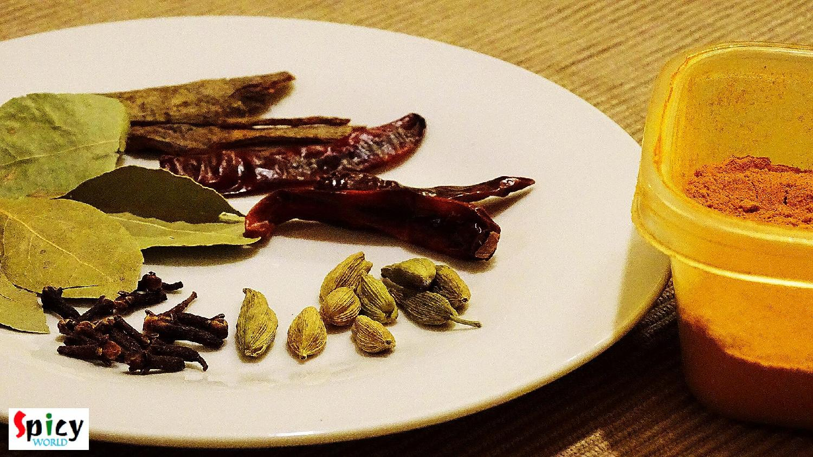
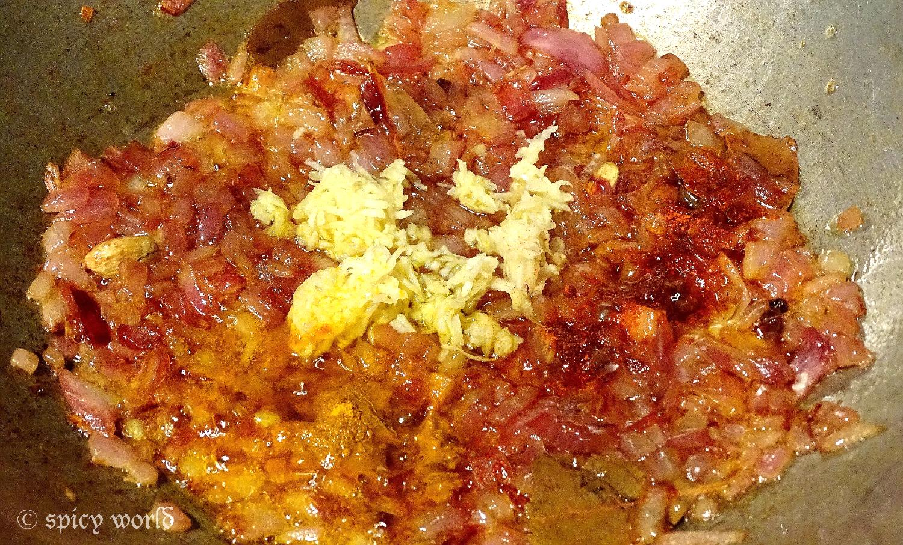
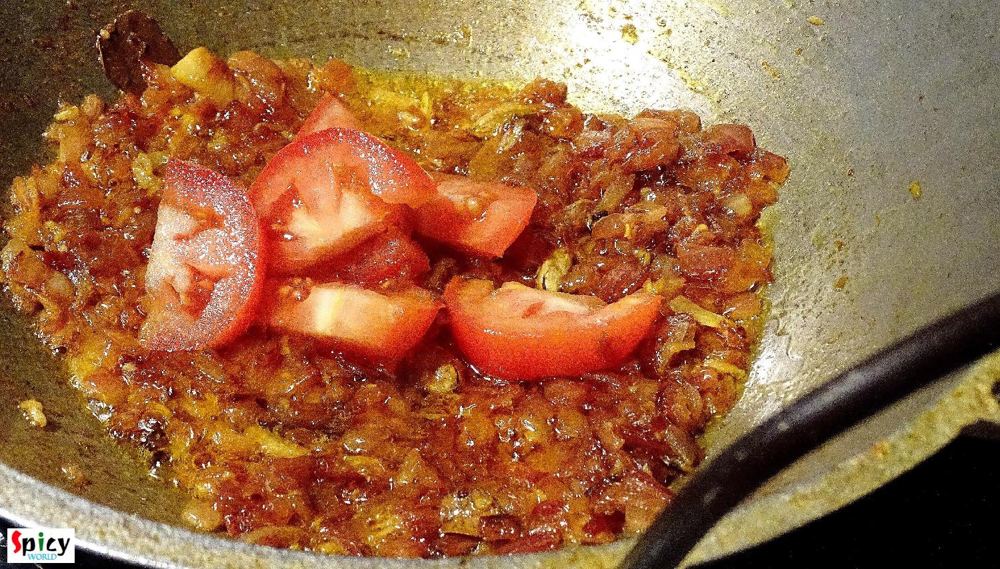
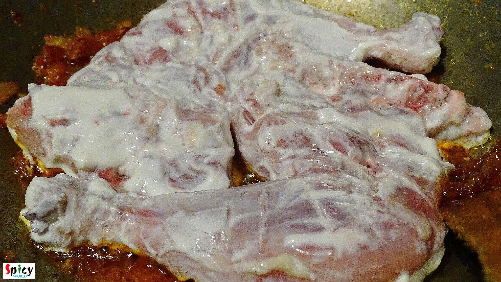
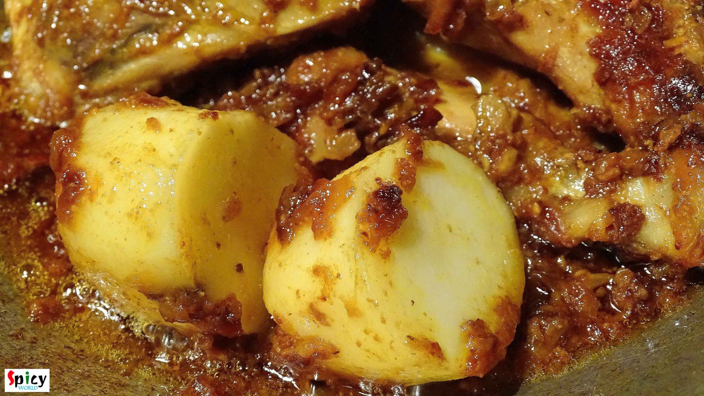
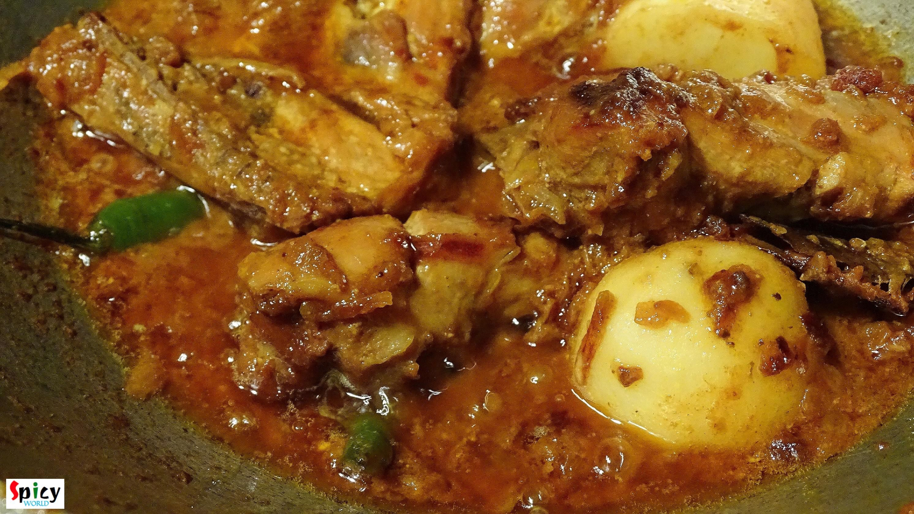
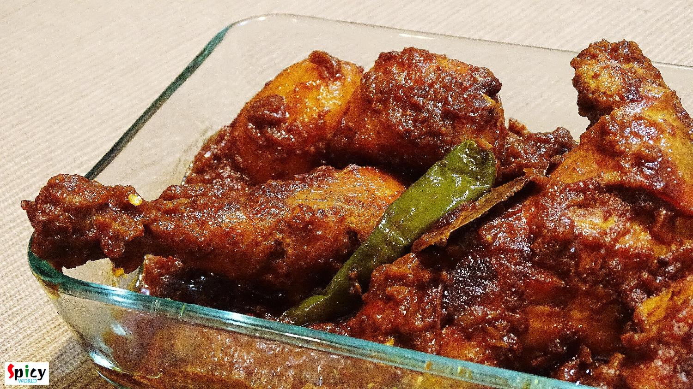

Chicken Kosha
In India, one of the common nonveg curry is 'chicken kosha'. I think everybody is familiar with this name. After making the masala, we add the chicken pieces and mix them. During this mixing process we do not add water, thats why we named it 'kosha' or 'bhuna'. You can make same curry with mutton, potato, egg etc. They all tastes really delicious. I maintained the recipe very simple and easy. Try this in your kitchen and let me know how it turns out.

Ingredients
- 4 medium pieces of chicken.
- Potato 2 pieces.
- 1 big onion chopped.
- 1 Teaspoon fresh ginger and garlic paste.
- 1 small tomato chopped.
- 4 Teaspoons hung curd.
- Spice powder (Turmeric powder 1 Teaspoon, Red chili powder 1 Teaspoon, Coriander powder 1 Teaspoon, Garam masala powder 2 Teaspoons).
- Whole spices (5green cardemom, 4 cloves, 1 small cinnamon stick, 6 black pepper corn, 1 bay leaf).
- 2 - 3 green chilies.
- Mustard oil 6 Teaspoons.
- Salt and sugar.
- Warm water.

Steps
Marinate the chicken pieces with curd and ½ Teaspoon of ginger and garlic paste. Keep aside for 1 to 2 hours.
Heat mustard oil in a pan.
Add 2 Teaspoons sugar in the hot oil and caramalized it.
Then add bay leaf, green cardemom, black pepper, cloves, cinnamon stick. Saute it for a minute.

Add chopped onion. Fry this till golden brown.
Add the remaining ginger and garlic paste and all the above mentioned spice powder. Cook this for 3 minutes.

Then add chopped tomatoes and some salt. Cook this for 5 minutes.

When the oil starts separating add the marinated chicken. Mix it very well for 10minutes. This is called 'kosha' or 'bhuna'.

Then add the potatoes and cook it in slow flame with lid for 20 minutes. Chicken will leave its own juice.

After that add some warm water, salt and green chilies. Cook the curry until the chicken and potatoes become soft.

Chicken should have some thick gravy.

Your chicken kosha is ready.
- Serve this with hot plain rice, pulao, naan ....